Project 4 / Scene Recognition with Bag of Words
The focus of this project was to examine different scene recognition methods. First, I start out describing the simplistic Tiny Images with Nearest Neighbor method. Next, I implement a more complicated Bag of SIFT representation to use with the Nearest Neighbor classifier for more accurate results. Finally, I discuss the creation of a Linear SVM classifier to use with the Bag of SIFT representation, which produced the most accurate results of all the methods.
Tiny Images Representation and Nearest Neighbor Classifier
To start, I implement a very simplistic image representation and classifier. The tiny image representation resizes the images to 16x16 thumbnails, which creates a 256-length feature. Then, the nearest neighbor classifier finds the nearest training example for a test feature and assigns the test feature the same label of that training example. This method of classification has many shortcomings, as it is vulnerable to training noise, suffers as feature dimensionality increases, and the features have all their high frequencies removed when resized to 16x16 images. Below you can see the confusion matrix produced using this method, which gave an accuracy of 20.1% with a computation time of 13 seconds.
Confusion matrix for Tiny Images and Nearest Neighbor method:
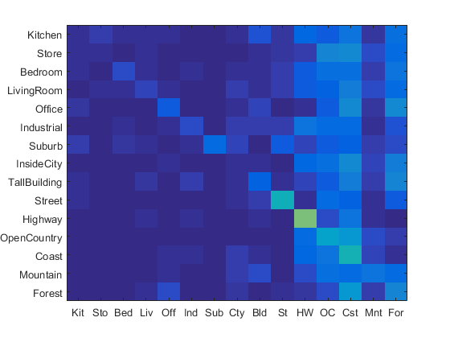
Accuracy (mean of diagonal of confusion matrix) is 0.201
Bag of SIFT Representation and Nearest Neighbor Classifier
In order to increase accuracy, I needed a better representation for my images than the tiny images representation. I was able to do this by using the Bag of SIFT representation. This representation ignores spatial information in the image by creating a histogram of the frequency of visual words. The vocabulary for these visual words is established by sampling a large amount of SIFT features from the training set and clustering them with kmeans. The step size used when creating the vocab and SIFT features determines the sampling density used in their creation. The vocab size is the number of clusters created and also the number of bins used when creating the histogram. Below I talk more about how these parameters affect the accuracy of this method and the amount of time the scene classification takes.
| Vocab Step Size | BoS Step Size | Accuracy | Vocab Time | Total Computation Time |
| 10 | 5 | 52.0% | 139 sec | 681 sec |
| 15 | 7 | 51.1% | 89 sec | 381 sec |
| 20 | 10 | 49.3% | 49 sec | 208 sec |
| 25 | 12 | 46.3% | 33 sec | 151 sec |
| 30 | 15 | 46.0% | 35 sec | 137 sec |
The table above was created by varying the vocab step size and Bag of SIFT step size, which changes the sampling density of each. By varying these step sizes, I recorded the effects on accuracy, vocab computation time, and total computation time. This table shows two interesting relationships depicted in the above graphs. The graph of the left shows, for this word size, the amount of time it takes increase accuracy increases exponentially and approaches a maximum accuracy somewhere before 60%. The graph on the right shows that the total computation time increases at an exponentially increasing rate as the vocab step size gets smaller and the vocab becomes more dense. The graph also shows that making the steps larger only helps make the computation faster to an extent, as the benefits of doing so to speed and the benefits to accuracy decline as the step size increases.
Confusion matrix for BoS and Nearest Neighbor method with the parameters:
Vocab step size:20, BoS step size:10, Vocab size:200

Accuracy (mean of diagonal of confusion matrix) is 0.502
Bag of SIFT Representation and Linear SVM Classifier
In order to further increase the scene classification accuracy, I use the Bag of SIFT representation that I created and classifiers trained by Linear SVMs. Although linear classifiers are very simple, they can learn which dimensions of a feature are less relevant and give them a lower weight. I train 15 1-vs-all SVMs to solve the 15-way classification problem of deciding which category a test case belongs in. These 15 classifiers are then used to evaluate each test case and whichever classifier is most confident assigns its category to the test case. This classifier introduces another variable, lambda, which controls how regularized the model is when learning a SVM. Through testing, I found for this application, a lambda value of .00025 gave me the most accurate results. Below I show more about how changing the vocab size in the Bag of SIFT representation affects the accuracy and computation time.
| Vocab Size | Accuracy | Total Computation Time |
| 10 | 43.6% | 54 sec |
| 20 | 50.0% | 63 sec |
| 50 | 57.1% | 90 sec |
| 100 | 60.5% | 132 sec |
| 200 | 61.5% | 211 sec |
| 400 | 66.9% | 383 sec |
| 1000 | 65.7% | 875 sec |
| 10000 | 67.5% | 8434 sec |
The table above shows the effects of changing the vocab size for Bag of SIFT representation using the linear SVM classifier with fixed step sizes. As you can see, accuracy increases as vocab size increases, but it does so at an increasing cost of computation time and for decreasing gains in accuracy. It is also interesting to note, computation time increases linearly with vocab size, which makes it easy to predict the computation time for any vocab size.
Confusion matrix for BoS and Linear SVM method with the parameters:
Vocab step size:20, BoS step size:10, Vocab size:200, Lambda:0.00025
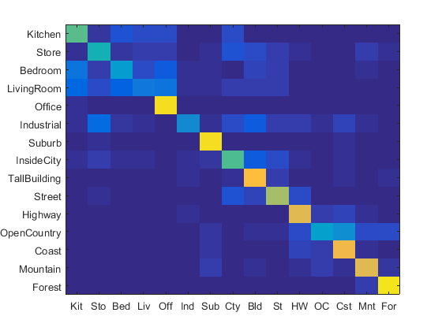
Accuracy (mean of diagonal of confusion matrix) is 0.625
Best Results
The results with greatest accuracy I achieved can be found below. I was able to achieve this accuracy of 67.5% using the Bag of SIFT representation and Linear SVM classifier, with a vocab step size of 20, a Bag of SIFT step size of 10, and a vocab size of 10,000. I experimented with many different values for Lambda, the regularization parameter used in the SVM classifier, and found that a value of .00025 was producing the best results. The tradeoff for having such a large vocab size was that the program took 2.5 hours to complete, but it did produce good results. I expect from the data that I gathered, that even better results could be achieved using a vocab step size of 10, a BoS step size of 5, and a vocab size of 10,000, but this would greatly increase the computation time to a point which it was not feasible for me to test. Even with these optimal parameter choices, the accuracy would still only be approaching 70% which is not much of a difference for the time complexity tradeoff.
Scene classification results visualization
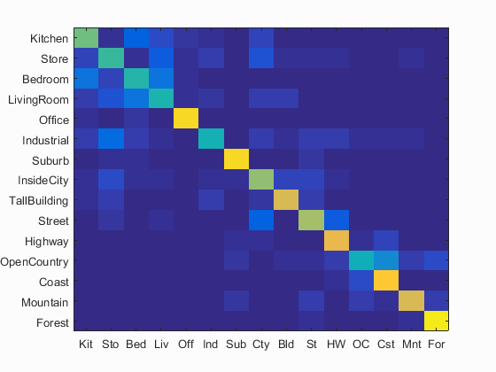Accuracy (mean of diagonal of confusion matrix) is 0.675
| Category name | Accuracy | Sample training images | Sample true positives | False positives with true label | False negatives with wrong predicted label | ||||
|---|---|---|---|---|---|---|---|---|---|
| Kitchen | 0.590 | 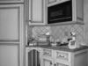 | 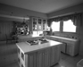 |  |
 |
Industrial |
Store |
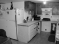 Bedroom |
 Bedroom |
| Store | 0.510 | 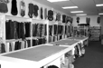 |  |
 |
InsideCity |
 Bedroom |
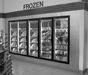 Kitchen |
 LivingRoom |
|
| Bedroom | 0.470 | 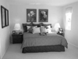 |  |
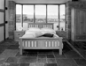 | Industrial |
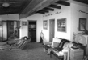 LivingRoom |
 Office |
Kitchen |
|
| LivingRoom | 0.460 | 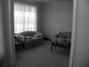 | 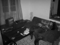 | 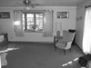 |  |
Coast |
 Store |
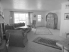 Highway |
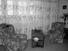 TallBuilding |
| Office | 0.910 |  |
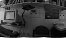 |  LivingRoom |
Bedroom |
Bedroom |
Bedroom |
||
| Industrial | 0.440 |  |
 TallBuilding |
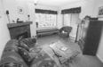 LivingRoom |
 InsideCity |
LivingRoom |
|||
| Suburb | 0.910 | 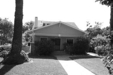 | 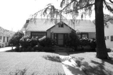 | 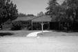 |  |
 InsideCity |
 OpenCountry |
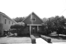 Street |
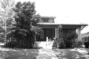 Street |
| InsideCity | 0.630 |  Kitchen |
 Store |
 Street |
Store |
||||
| TallBuilding | 0.760 |  |
 Industrial |
Store |
 Kitchen |
 Coast |
|||
| Street | 0.660 | 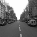 |  Industrial |
 Industrial |
 InsideCity |
InsideCity |
|||
| Highway | 0.790 |  |
 |
 Street |
 OpenCountry |
 Coast |
Coast |
||
| OpenCountry | 0.430 | 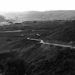 | 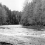 |  |
 Coast |
Industrial |
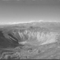 Highway |
Coast |
|
| Coast | 0.860 |  |
 OpenCountry |
 OpenCountry |
LivingRoom |
 OpenCountry |
|||
| Mountain | 0.750 |  |
 OpenCountry |
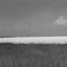 OpenCountry |
Street |
 Forest |
|||
| Forest | 0.960 | 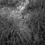 | 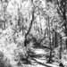 | 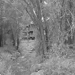 |  |
 Highway |
Mountain |
 Street |
 Mountain |
| Category name | Accuracy | Sample training images | Sample true positives | False positives with true label | False negatives with wrong predicted label | ||||